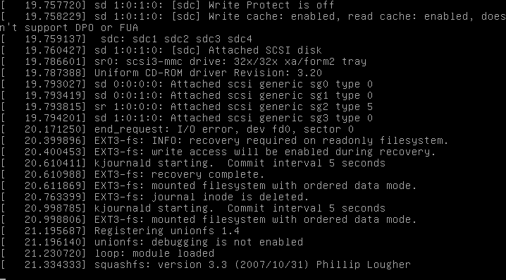
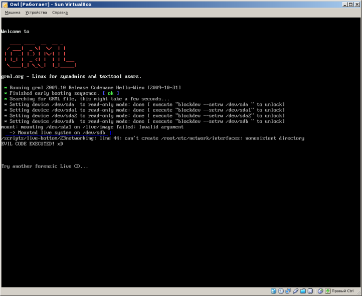

Forensic live cd issues
The problem
Forensic Live CDs are widely used during computer forensic investigations. Currently, many vendors of such Live CD distributions spread false claims that their distributions "do not touch anything", "write protect everything" and so on. Unfortunately, community-developed distributions are no exception here. Finally, it turns out that many Linux-based forensic Live CDs are not tested properly and there are no suitable test cases published.
Another side of the problem
Another side of the problem of insufficient testing of forensic Live CDs is that many users do not know what happens "under the hood" of the provided operating system and cannot adequately test them.
Example
For example, Forensic Cop Journal (Volume 1(3), Oct 2009) describes a test case when an Ext3 file system was mounted using "-o ro" mount flag as a way to write protect the data. The article says that all tests were successful (i.e. no data modification was found after unmounting the file system), but it is known that damaged (i.e not properly unmounted) Ext3 file systems cannot be write protected using only "-o ro" mount flags (write access will be enabled during file system recovery).
And the question is: will many users test damaged Ext3 file system (together with testing the clean one) when validating their favourite forensic Live CD distribution? My answer is "no", because many users are unaware of such traits.
Problems
Each problem is followed by a list of distributions affected (currently this list is not up-to-date).
Journaling file system updates
When mounting (and unmounting) several journaling file systems with only "-o ro" mount flag a different number of data writes may occur. Here is a list of such file systems:
| File system | When data writes happen | Notes |
|---|---|---|
| Ext3 | File system requires journal recovery | To disable recovery: use "noload" flag, or use "ro,loop" flags, or use "ext2" file system type |
| Ext4 | File system requires journal recovery | To disable recovery: use "noload" flag, or use "ro,loop" flags, or use "ext2" file system type |
| ReiserFS | File system has unfinished transactions | "nolog" flag does not work (see man mount). To disable journal updates: use "ro,loop" flags |
| XFS | Always (when unmounting) | "norecovery" flag does not help (fixed in recent 2.6 kernels). To disable data writes: use "ro,loop" flags. |
Incorrect mount flags can be used to mount file systems on evidentiary media during the boot process or during the file system preview process. As described above, this may result in data writes to evidentiary media. For example, several Ubuntu-based forensic Live CD distributions mount and recover damaged Ext3/4 file systems on fixed media (e.g. hard drives) during execution of initrd scripts (these scripts mount every supported file system type on every supported media type using only "-o ro" flag in order to find a root file system image).
 damaged Ext3 recovery during the boot
List of distributions that recover Ext3 (and sometimes Ext4) file systems during the boot:
| Distribution | Version |
|---|---|
| Helix3 | 2009R1 |
| SMART Linux (Ubuntu) | 2010-01-20 |
| FCCU GNU/Linux Forensic Boot CD | 12.1 |
| SPADA | 4 |
Orphan inodes deletion
When mounting Ext3/4 file systems all orphan inodes are removed, even if "-o ro" mount flag was specified. Currently, there is no specific mount flag to disable orphan inodes deletion. The only solution here is to use "-o ro,loop" flags.
Root file system spoofing
See also: early userspace
Most Ubuntu-based forensic Live CD distributions use Casper (a set of scripts used to complete initialization process during early stage of boot). Casper is responsible for searching for a root file system (typically, an image of live environment) on all supported devices (because a bootloader does not pass any information about device used for booting to the kernel), mounting it and executing /sbin/init program on a mounted root file system that will continue the boot process. Unfortunately, Casper was not designed to meet computer forensics requirements and is responsible for damaged Ext3/4 file systems recovery during the boot (see above) and root file system spoofing.
 mounted root file system from the hard drive
Currently, Casper may select fake root file system image on evidentiary media (e.g. HDD, because there are no authenticity checks performed (except optional UUID check for a possible live file system), and this fake root file system image may be used to execute malicious code during the boot with root privileges. Knoppix-based forensic Live CD distributions are vulnerable to the same attack.
List of Ubuntu-based distributions that allow root file system spoofing:
| Distribution | Version |
|---|---|
| Helix3 | 2009R1 |
| Helix3 Pro | 2009R3 |
| CAINE | 1.5 |
| Raptor | 2.0 |
| BackTrack | 4 |
| SMART Linux (Ubuntu) | 2010-01-20 |
| FCCU GNU/Linux Forensic Boot CD | 12.1 |
Vulnerable Knoppix-based distributions include: SPADA, LinEn Boot CD, BitFlare.
Anti-Forensics.Ru project released several ISO 9660 images used to test various Linux Live CD distributions for root file system spoofing.
Swap space activation
Feel free to add information about swap space activation during the boot in some distributions
Incorrect mount policy
rebuildfstab and scanpartitions scripts
Several forensic Linux Live CD distributions (Helix3 2009R1, Helix3 Pro 2009R3, old versions of CAINE, old versions of grml) use rebuildfstab and scanpartition scripts to create entries for attached devices in /etc/fstab. Some versions of these scripts use wrong wildcards while searching for available block devices (/dev/?d? instead of /dev/?d*), this results in missing several "exotic" devices (like /dev/sdad, /dev/sdad1, etc.) and in data writes when mounting them (because fstab lacks of read-only mount options for these devices).
Incorrect write blocking approach
Some forensic Linux Live CD distributions rely on hdparm and blockdev programs to mount file systems in read-only mode (by setting the underlying block device to read-only mode). Unfortunately, setting a block device to read-only mode does not guarantee that no write commands will be passed to the drive.
There were several other bugs related to writing on a read-only block device in the past (like Ext3/4 orphan inodes deletion). At present (Linux 3.14.2), kernel code still disregards read-only mode set on block devices in many places (it should be noted that setting a block device to read-only mode will efficiently write-protect the drive from programs running in userspace, while kernel and its modules still can write anything to the block device, regardless of the read-only mode).
Analysis of the source code for the "write blocking" functionality utilized by hdparm and blockdev demonstrates that these tools use the same system call to alter a kernel flag which is checked in the file system layer. This flag (when set) disables generic write operations on a file within a file system and many internal write operations of the file system layer (like journaling, recovering a file system after a crash, superblock modifications, etc.). File system drivers use the interface to the block device layer to perform internal write operations, and the block device layer is ignoring (not checking) the read-only flag set by hdparm or blockdev on a block device, therefore it's up to a file system driver to refuse writing to a block device in read-only mode (and there is nothing stopping write operations issued by a file system driver not adhering the read-only mode of a block device due to the lack of read-only flag checks). A patch has been implemented to add the write blocking functionality to the IO scheduler / block device layer as well, and make it the default to block all write IO issued to a read-only block device (Linux write blocker does almost the same, except it doesn't write block anything by default).